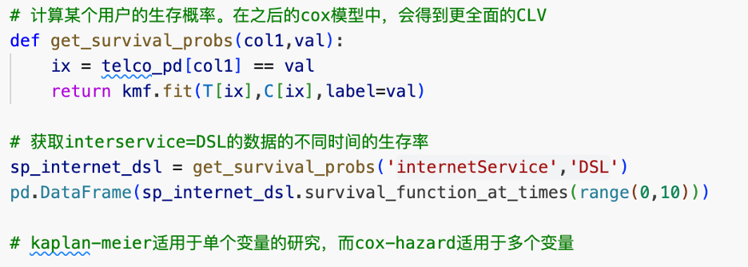
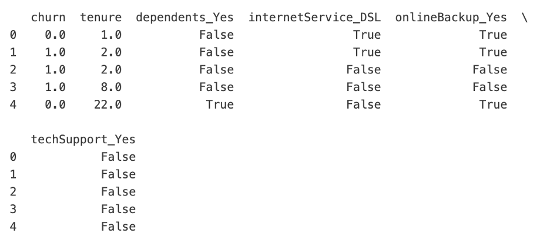
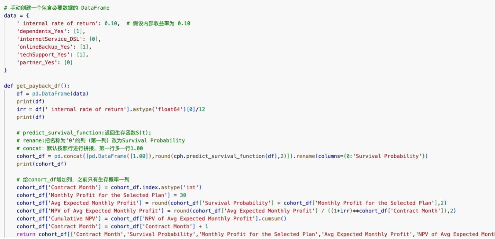
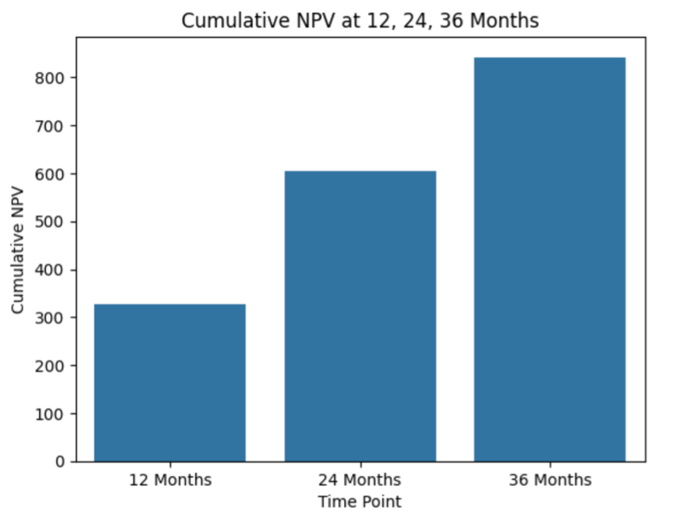

用电信公司客户数据做生存分析
第一部分
我们现在有一个csv文件,内含电信公司客户的数据,每一列代表用户的一个属性,每一行代表一个用户,共21列7044行.下面展示其中的一行:

首先创建sparksession,根据csv数据设置schema,读取数据,选择所有month-to-month的数据,把churn列从字符串变为boolean:

Bronze table:
Silver table:
第二部分: 首先把spark数据框转换为pandas数据框,便于处理.绘制kaplan-Meier 拟合曲线,得到生存率和时间的关系:
选取一个协变量,绘制多种协变量取值下的拟合曲线,进行假设检验,以确定该协变量的影响是否显著.下图选取的协变量是性别:
下面选取的协变量是online security,它的影响显著:
最后计算internet service=DSL的用户的生存概率,如下表所示:
第三部分: 用cox比例风险模型,研究风险和协变量的关系.考虑风险(生存率的倒数),把风险分为基础风险和附加风险,定义风险比为基础风险/附加风险,当没有任何协变量时,风险比等于1,风险比例假设为风险比与时间无关
用coxPHfilter求每个变量的风险比,风险比表示了这个协变量对生存率的影响方向,如果显著性水平(p值)小于0.005则影响显著:
从下表看出除了internet service,其他3个协变量的影响显著,而且都是使风险下降,其中onlineBackup_Yes风险下降的程度最高,表示如果用户购买了onlineBackup这个服务,那么他不流失的概率会增加不少:
接下来用Schoenfeld Residuals法检验风险比例假设,原假设为基础风险和额外风险不成比例,当p值较大时候,可以拒绝原价设而使风险比例假设成立:
表中km和rank是两种假设检验的方法.可以看到只有dependents的p值较大,其他都不服从风险比例假设,说明需要进一步优化模型:
第四部分: 选择以下8个协变量,建立accelerate failure time(AFT)模型研究生存时间函数:
用AFT模型根据样本预测生存时间.S(t)=P(T>t),S(0)=1,且S随时间增大而减少,log-logistic模型的S(t)=1/(1+lambda*t^p).假设生存时间的对数服从log- logistic分布,建立AFT模型:
可以看出除了internet service,其他协变量的影响均显著,这与cox模型的结果吻合.另外所有协变量的exp(coef)均大于1,表示它们都会使生存时间增加:
接下来检验proportional odds假设,发现两条线不平行,不满足假设,因此不能直接使用AFT模型:
第五部分: 还是选择cox 比例风险模型来研究NPV(Net Present Value),选择原来的那5个列,不同的是,把churn从boolean改成float,也就是0/1.便于预测具体的价值:
部分数据如下:
拟合cox比例风险模型:
然后给定一组数据,研究这个样本的NPV随时间的关系:
第12、24、36个月时的累积NPV:
绘制生存概率随时间的变化曲线如下: